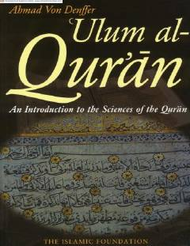

QIQur'on ilmlari va uning nozil bo'lish tarixi haqida fundamental qo'llanma.
Ushbu kitob Qur'on ilmlari (Ulumul Qur'on) sohasiga kirish bo'lib, Qur'onning nozil bo'lishi, jamlanishi, tartibi va tafsir usullari kabi muhim mavzularni qamrab oladi. Muallif yosh musulmonlar uchun Qur'on xabarini chuqurroq tushunish va uni hayotga tatbiq etishda yordam beradigan ilmiy asoslarni taqdim etadi.